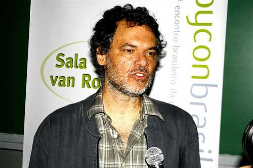

<div class="profile"><div>
  <div class="source">
Lua (1993)
  </div>
  <div class="detail">
    
    <div class="search"><a href="http://www.google.com/cse?cx=partner-pub-6997921015773263:4467526896&ie=UTF-8&q=Roberto Ierusalimschy" target="_blank"></a> | <a href="http://en.wikipedia.org/wiki/Yukihiro_Matsumoto" target="_blank">wiki</a></div>
    <div class="name">Roberto Ierusalimschy</div>
    <div class="info"><b>Roberto Ierusalimschy</b> is an associate professor of informatics at PUC-Rio (Pontifical University in Rio de Janeiro). He is the leading architect of the Lua programming language.
    <p><b><a href="http://en.wikipedia.org/wiki/Lua_(programming_language)" target="_blank">Lua</a></b> ( /<span class="IPA">ˈluːə</span>/ loo-ə; from Portuguese: lua meaning "moon") is a lightweight multi-paradigm programming language designed as a scripting language with extensible semantics as a primary goal. Lua has a relatively simple C API compared to other scripting languages.</p>
    </div>
  </div>
  <div class="photo">
    
  </div>
</div></div>